RICH SHOP (Rysen Game)
แพลตฟอร์มเว็บแอปพลิเคชัน (Web Application) สำหรับจำหน่ายซอฟต์แวร์และคีย์เกมลิขสิทธิ์ออนไลน์แบบอัตโนมัติ ส่งตรงถึงอีเมลผู้ซื้อทันทีหลังชำระเงิน
ความท้าทายเชิงบริหารและเวลา (The Challenge & Strategy)
โปรเจกต์นี้เป็นข้อสอบประมวลความรู้ (QE) ที่นิสิตไม่มีโอกาสเลือกทีมเอง และมีเวลาจำกัดเพียง 3 วัน (ตั้งแต่รับโจทย์ ออกแบบ พัฒนา จนถึงนำเสนอผลงานกลุ่มละ 2 ชั่วโมง) ภายใต้สแต็กเทคโนโลยี Next.js และ MySQL ที่ซับซ้อน
🚀 กลยุทธ์การแก้ปัญหาด้าน Time-Constraint ในฐานะ UX/UI Designer:
1. การแบ่งหน้าที่แบบคู่ขนาน (Team Collaboration)
ในทีมมี UX/UI ทั้งหมด 2 คน เพื่อไม่ให้งานทับซ้อนและทำได้เร็วที่สุด จึงตกลงแบ่งสถาปัตยกรรมระบบอย่างชัดเจน โดยฉันรับหน้าที่ดูแลและออกแบบฝั่ง Frontend (หน้าบ้านสำหรับลูกค้า) ทั้งหมด 100% ส่วนเพื่อนอีกคนแยกไปดูแลระบบหลังบ้าน (Backend Admin Dashboard)
2. แนวคิด Design in Browser (ทลายคอขวด Hand-off)
หากทำ Wireframe และ UI ลง Figma ตามปกติ โปรแกรมเมอร์จะเสียเวลาอย่างมากในการแกะดีไซน์และเขียน CSS ใหม่ภายใต้เวลาที่บีบคั้น ฉันจึงเลือกออกแบบและเขียนโค้ดออกมาเป็น High-Fidelity Code Prototype (HTML + Tailwind CSS) โดยตรง ทำให้โปรแกรมเมอร์สามารถคัดลอก Component และ Layout ไปใช้บน Next.js ได้ทันที ประหยัดเวลาของทีมไปได้มากกว่า 50%
Frontend UX/UI Architecture Showcase
ธีมการออกแบบ: Tech-Futuristic Theme (Dark Mode)
เน้นโทนสีเข้มลึกลับตัดกับสีฟ้า-เขียวไซแอน (Cyan) เพื่อสร้างความรู้สึกล้ำสมัย สมจริง ปลอดภัย และดึงดูดกลุ่มผู้ใช้งานที่เป็น "เกมเมอร์" ได้อย่างมีประสิทธิภาพสูงสุด
หน้าแรกและระบบจำแนกสิทธิ์เข้าถึง (Home Page - Before & After Login)
คลิกที่รูปเพื่อดูขนาดเต็ม (เลื่อนดูได้เฉพาะรูปในหัวข้อนี้)
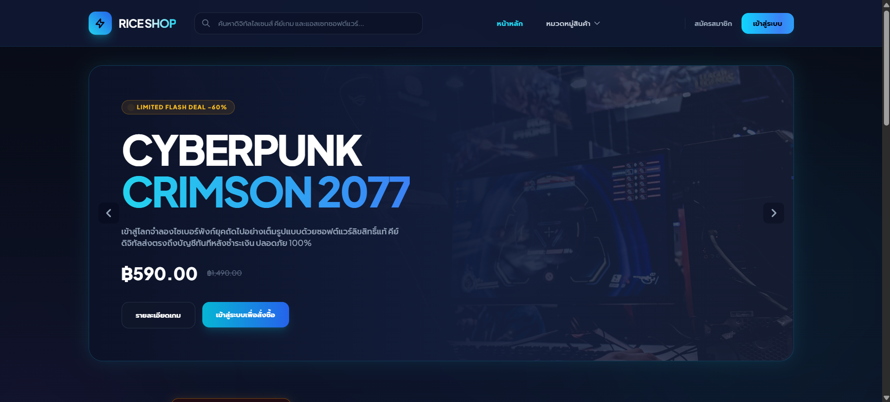
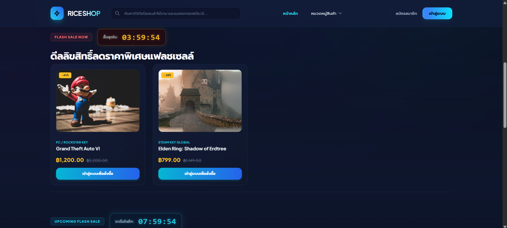
ระบบสมัครสมาชิก เข้าสู่ระบบ และกู้คืนบัญชีความปลอดภัยสูง (Authentication Flow)
คลิกที่รูปเพื่อดูขนาดเต็ม (เลื่อนดูได้เฉพาะรูปในหัวข้อนี้)
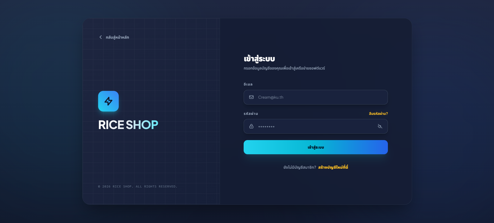
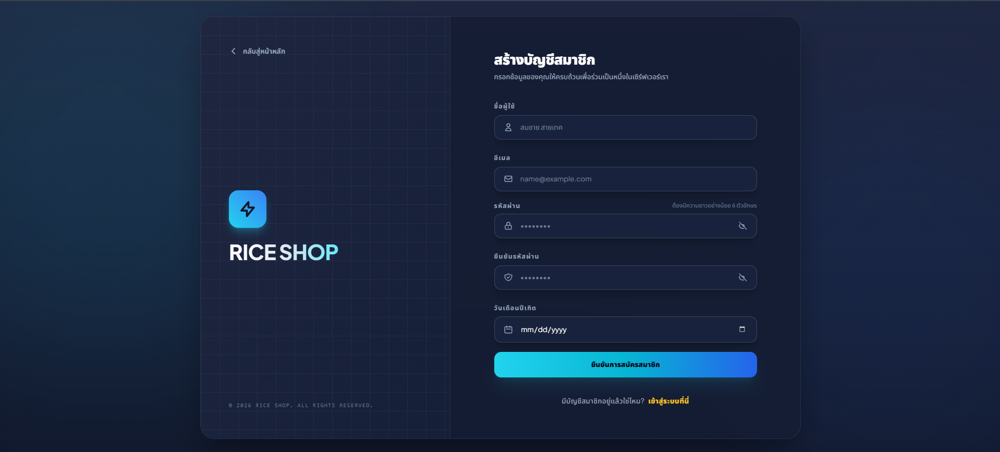
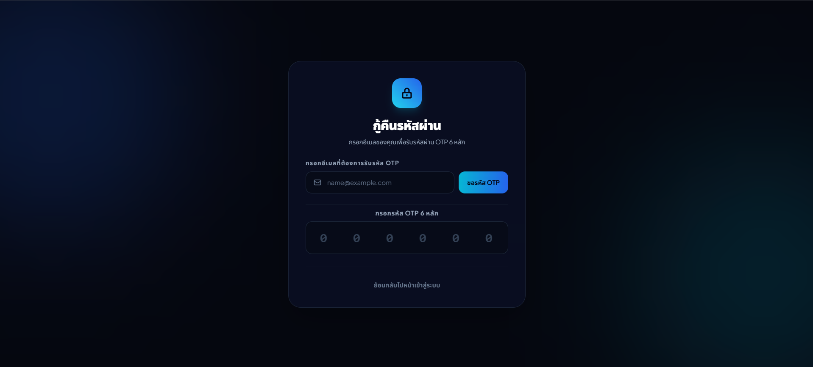
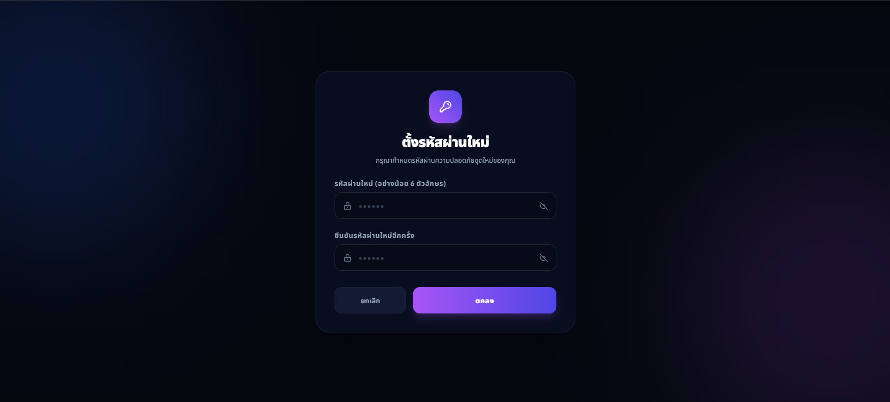
ระบบคัดกรองหมวดหมู่ และหน้ารายละเอียดสินค้า (Category Navigation & Product Detail)
คลิกที่รูปเพื่อดูขนาดเต็ม (เลื่อนดูได้เฉพาะรูปในหัวข้อนี้)
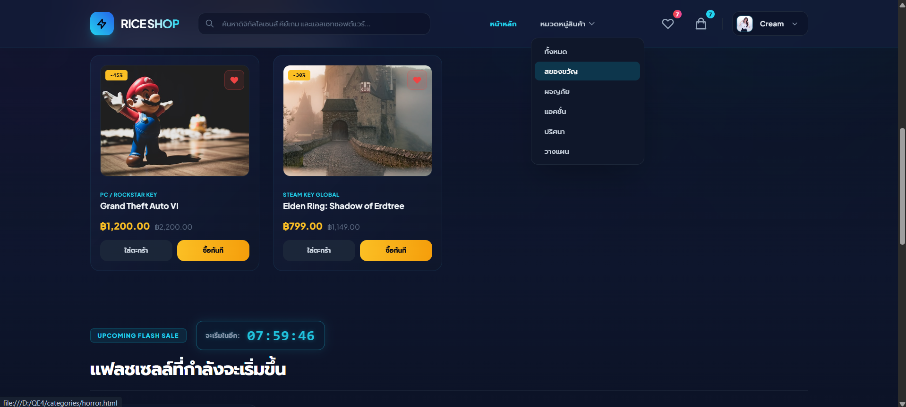
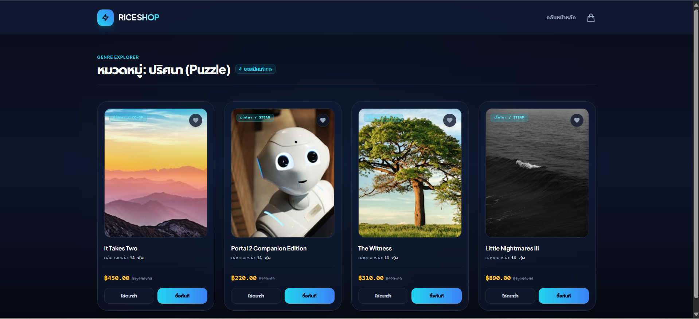
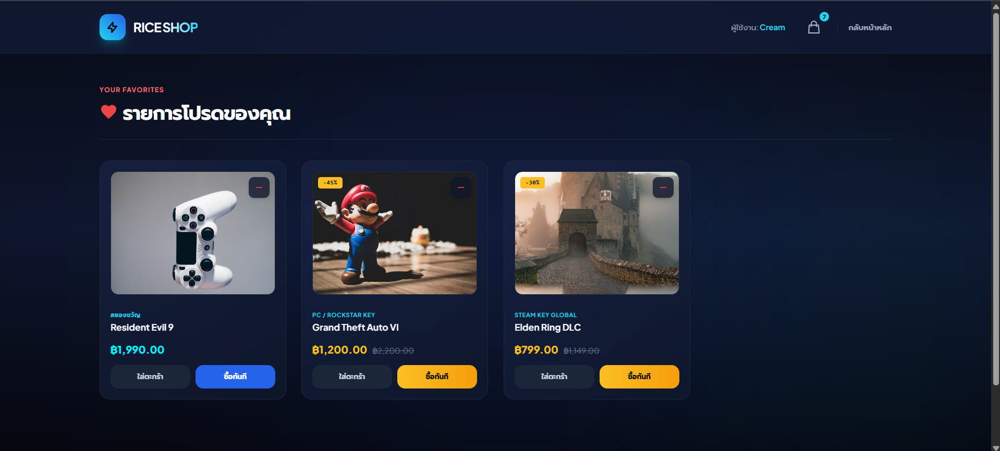
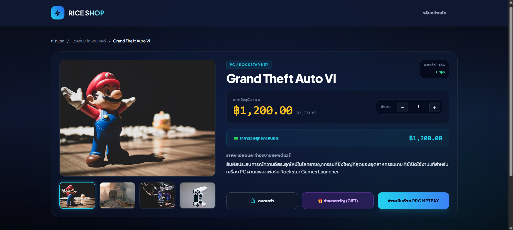
ระบบจัดการตะกร้าสินค้า และฟังก์ชันส่งต่อของขวัญ (Smart Cart & Gift System)
คลิกที่รูปเพื่อดูขนาดเต็ม (เลื่อนดูได้เฉพาะรูปในหัวข้อนี้)
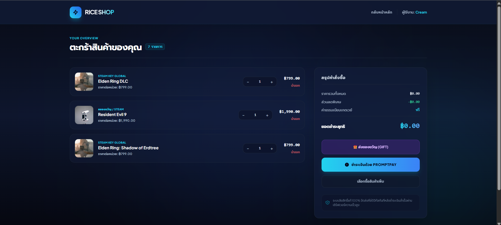
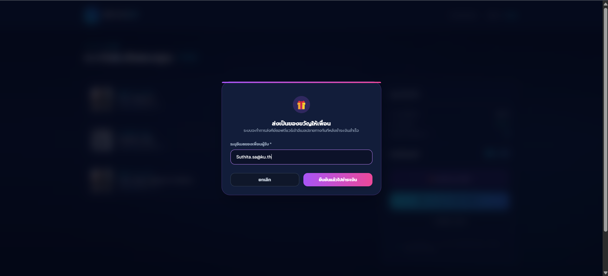
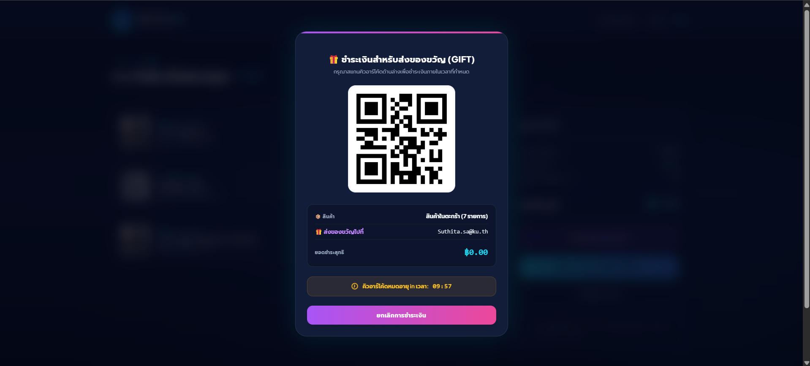
ระบบชำระเงินจำกัดเวลา และแดชบอร์ดผู้ใช้ ประวัติดตามคำสั่งซื้อ และใบเสร็จ (Checkout Gateway & Order Dashboard)
คลิกที่รูปเพื่อดูขนาดเต็ม (เลื่อนดูได้เฉพาะรูปในหัวข้อนี้)
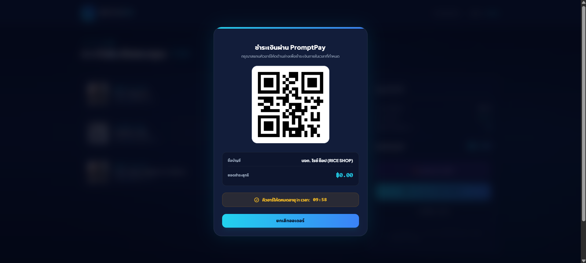
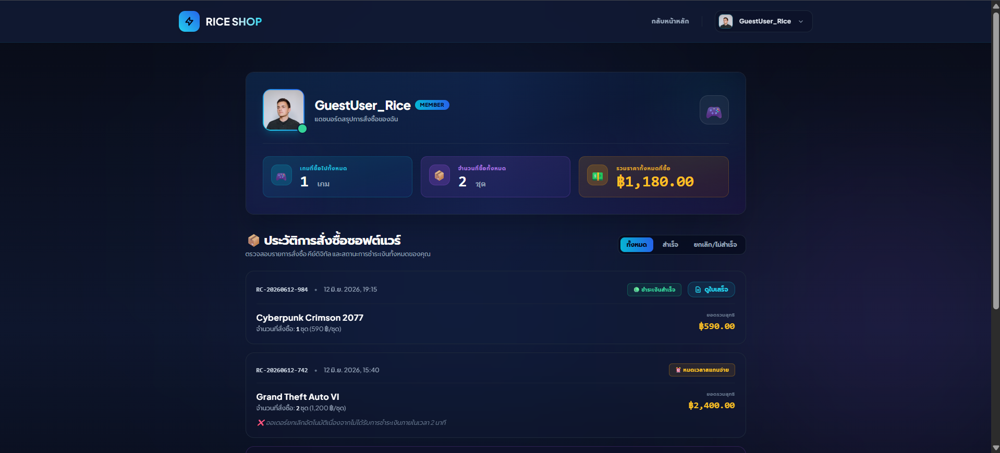
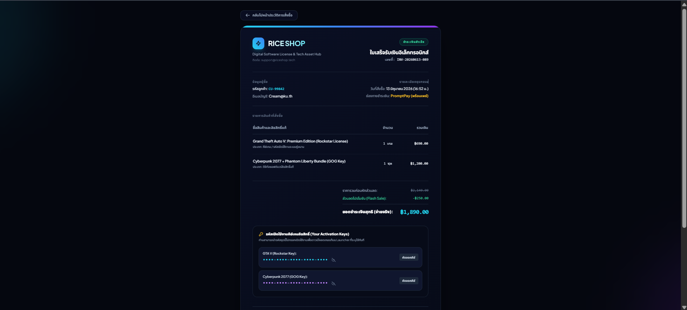
ผลลัพธ์และความสำเร็จ (Project Outcome)
จากการสลับวิธีทำงานมาเป็น High-Fidelity Code Prototype ทำให้ทีมสามารถจัดสรรเวลากลุ่ม 3 วันได้อย่างมีประสิทธิภาพ โปรแกรมเมอร์ใช้เวลาเพียง 1 วันครึ่งในการผูก Logic บน Next.js และต่อ MySQL สำเร็จทันเวลา ตัว Prototype ได้รับคำชมจากกรรมการสอบประมวลความรู้ว่ามีการคิดค้น UX Flow ที่ตอบโจทย์ Pain Point ของธุรกิจขายเกมจริง และมีการจัดการ Hand-off ที่เป็นมืออาชีพ
← กลับสู่หน้าหลักพอร์ตโฟลิโอ